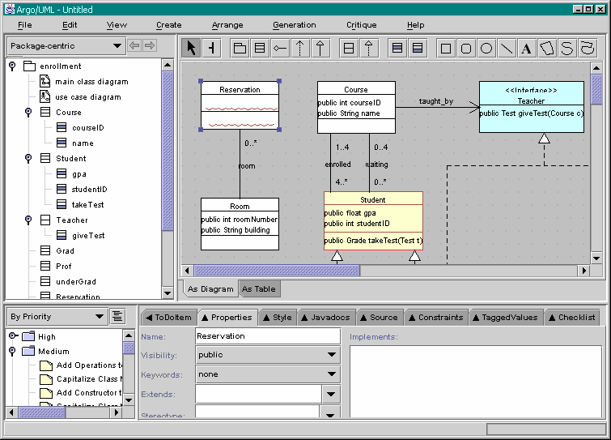

Previous step | Back to ArgoUML Tours
Now you are able to finish the rest of the diagram!
To shift all items on the diagram aside to make room for the 2 new classes,
press the key-combination Ctrl-A, which selects all items at once. Then grab
and shift any item with the mouse.
Tip: if you double click on any of the toolbar icons,
you will be able to add multiple instaces of the selected figure type without
having to go back to the toolbar. E.g. double click on the class tool, and
then twice in the diagram. This will create the 2 classes needed:
"Reservation" and "Room".

Back to ArgoUML Tours
Back to ArgoUML Home